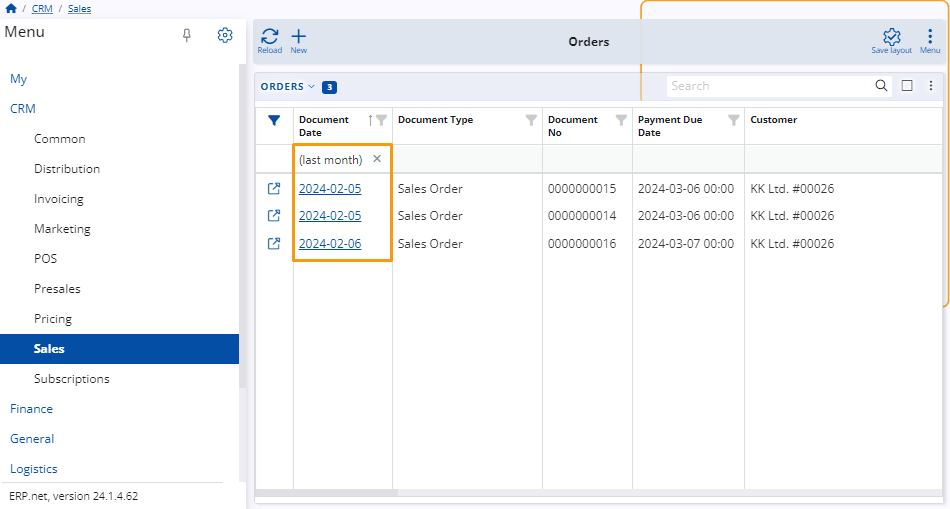
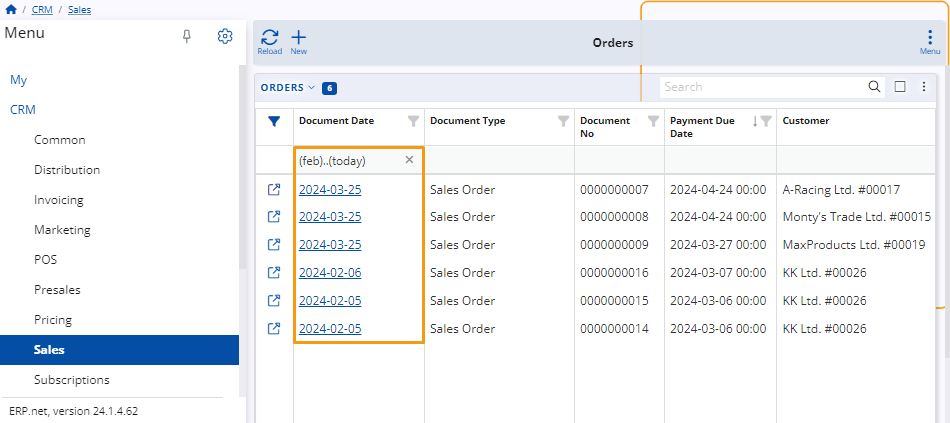

How to use period expressions
You can use period expressions to narrow down the scope of what is displayed in a particular navigator.
They are specified in the filter row found under the date columns of the respective navigator as well as in the Advanced filter panel using the contains operator.
If the filtering row is not visible, you can enable it through the panel's menu or by clicking on the filter icon on the far-left of the columns.
Example:
Within the Orders panel of the Sales module, you input "(today)" in the filtering row of the Document Date column.
This results in only items created on the current date to be displayed in the table.

Rules and syntax
Period expressions follow a fixed syntax that can influence the outcome they produce.
It's therefore crucial to write them down exactly as they are if you want to achieve the desired effect.
Relative time expressions
These expressions are word-based and surrounded by brackets. You can use them to define specific dates or broader date ranges which are always relative to the current one.
Examples include "(yesterday)" and "(last month)". They always take into consideration today as a reference point.
While (yesterday) will list results only from the date before today, (last month) will show results from across the entire month previous to the current one.

Here's a list of relative time expressions:
| Expression | Begin | End | Notes |
|---|---|---|---|
| (today) | 2023-11-27 | 2023-11-27 | |
| (yesterday) | 2023-11-26 | 2023-11-26 | |
| (last month) | 2023-10-01 | 2023-10-31 | |
| (current month) | 2023-11-01 | 2023-11-30 | |
| (next month) | 2023-12-01 | 2023-12-31 | |
| (last year) | 2022-01-01 | 2022-12-31 | |
| (current year) | 2023-01-01 | 2023-12-31 | |
| (next year) | 2024-01-01 | 2024-12-31 | |
| (ytd) | 2023-01-01 | 2023-11-27 | Year-to-date |
| (jan) | 2023-01-01 | 2023-01-31 | |
| (jan last year) | 2022-01-01 | 2022-01-31 |
Relative period expressions
These expressions consist of symbols, numbers and letters and can be used in two ways:
Without brackets
If a period expression is used without brackets, it limits the scope of a table's records to only the ones created on specific dates relative to the current one.
For example, "-7d" denotes the date exactly seven days before the current one, while "+2d" represents a date exactly two days ahead of the current one.
Similarly, "-1m" indicates the date exactly one month before the current date, while "+1y" denotes the date exactly a year after the current one.
To see records only for today, you can specify "0". Even if you add "+" or "-" before "0" or any letter after "0", the final effect will be the same.

With brackets
If surrounded by brackets, relative period expressions can be used to specify rounded calendar periods relative to the present moment.
For example, "(-1m)" denotes the entire month that was before the current month, while "(+1y)" represents the entire year that follows the current one.
To see records only for the duration of the current month, you can specify "(0m)". Even if you add "+" or "-" before "0m", the final effect will be the same.

Warning
- "0" specified without brackets represents the current date regardless of whether it's used as a beginning or end.
- If no indicating letter is specified next to a number, the default convention is days, e.g. "-7" is equivalent to "-7d" and "0" represents today.
- When specifying a period in days, it can be written with or without brackets, e.g. "-7" is equivalent to "(-7)".
| Expression | Begin | End | Notes |
|---|---|---|---|
| 0m | 2024-02-27 | 2024-02-27 | today |
| +0m | 2024-02-27 | 2024-02-27 | today |
| -0m | 2024-02-27 | 2024-02-27 | today |
| -0d | 2024-02-27 | 2024-02-27 | today |
| -0y | 2024-02-27 | 2024-02-27 | today |
| 0 | 2024-02-27 | 2024-02-27 | today |
Expressions for quarters and half years
These expressions establish specific intervals within a broader timeframe.
For example, "q1" points to the entire first quarter of the year, "q2" represents the second quarter, and "h1" denotes the first half of the year.

Custom time periods
You can set custom time periods to fit the results of a table into a specific timeframe. This is achieved by adding ".." between two period expressions or fixed dates.
For instance, "(feb)..(today)" represents the entire time period spanning from the beginning of February up until and including the current date.
Similarly, "(yesterday)..+2d" starts from yesterday and includes the two dates following the current date.
If there is no notation before or after "..", it implies infinity. Thus, "..(last month)" would result in a navigator showing all existing records up until the final day of the last month.

Note
The screenshots taken for this article are from v24 of the platform.